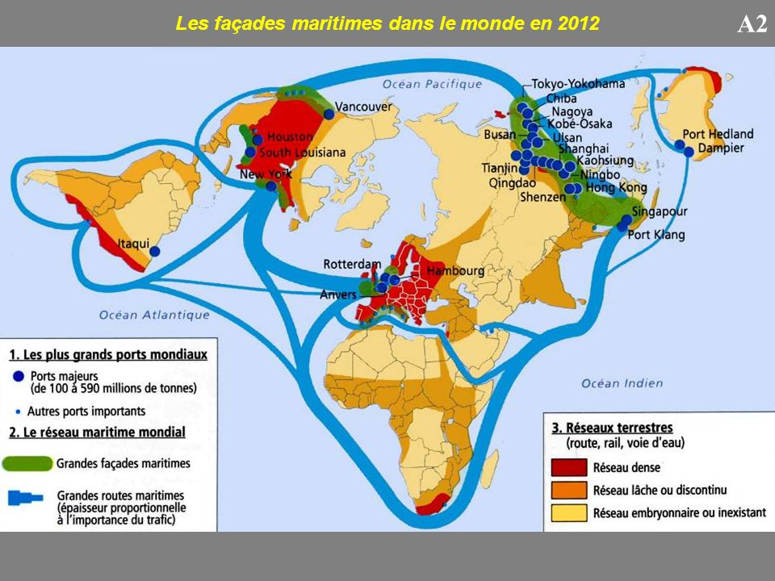

Les réseaux aériens sont des "routes" fictives, elles sont fixes et relient les aéroports entre eux.
Ces routes sont propres à chaque compagnie aérienne. Elles sont très bien définies, pour permettre une utilisation en toute sécurité.
Certaines "routes" sont propres à un usage touristique, militaire, commercial ... Le réseau mondial est extrêmement dense dans certaines régions (Europe, Amérique du Nord)
Les réseaux maritimes sont des routes utilisées par les bateaux. Elles sont utilisées majoritairement pour les transports de marchandises et pour les touristes

Le réseau routier
Le réseau routier est l'ensemble des voies de circulation terrestres permettant le transport par véhicules routiers
en particulier, les véhicules motorisés (automobiles, motos, autocars, poids lourds...). Il existe différents types de réseaux routiers : -Autoroutes
-Routes (départementales, régionales, nationales) -2x2 voies
Le réseau ferroviaire
Le réseau ferroviaire est un ensemble de lignes de chemin de fer, de gare et d'installations diverses (triages, dépôts).
Exemple du réseau aérien de la compagnie South African Airways en 2010.